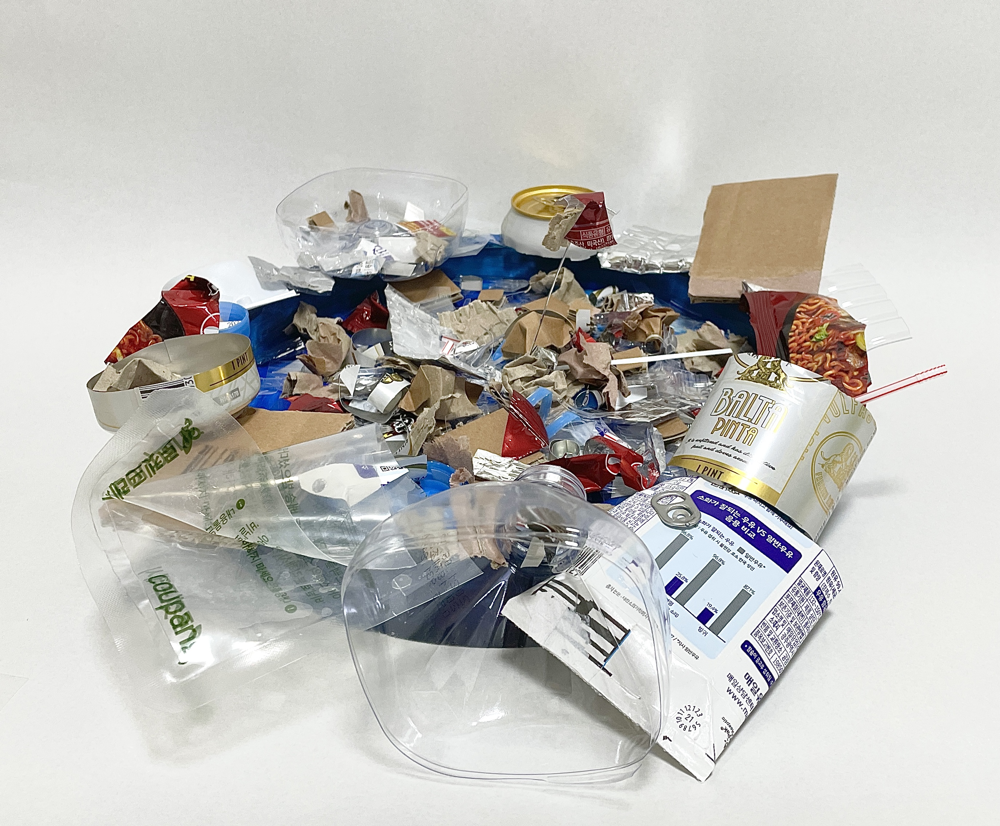
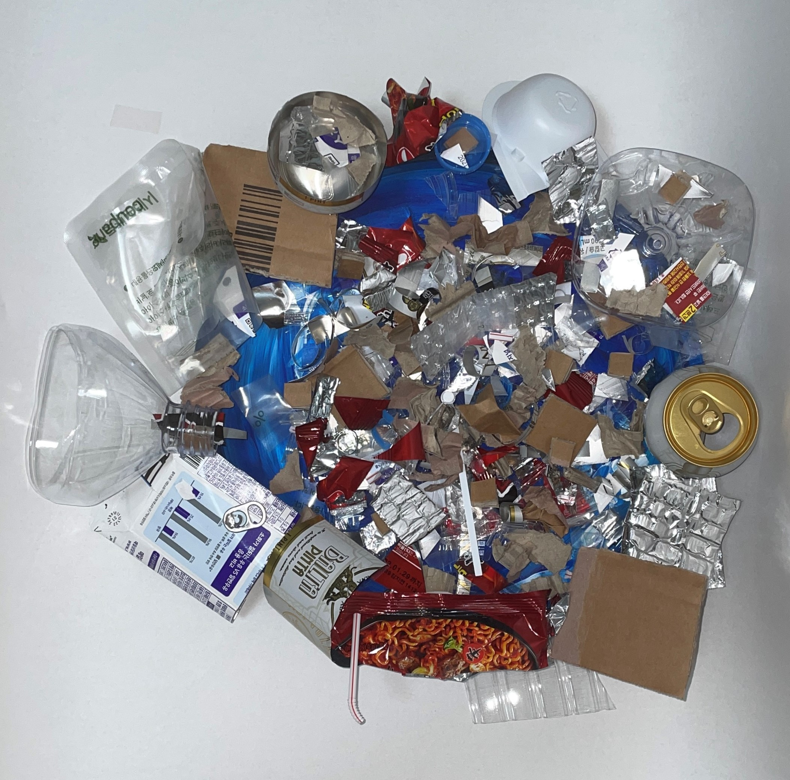
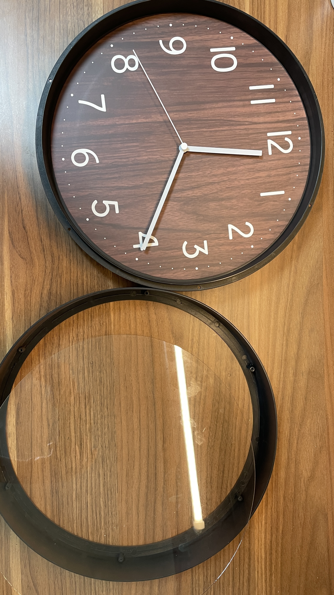
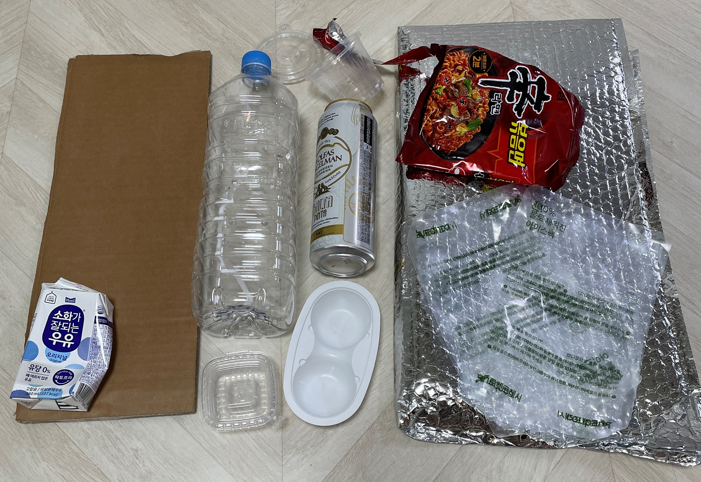
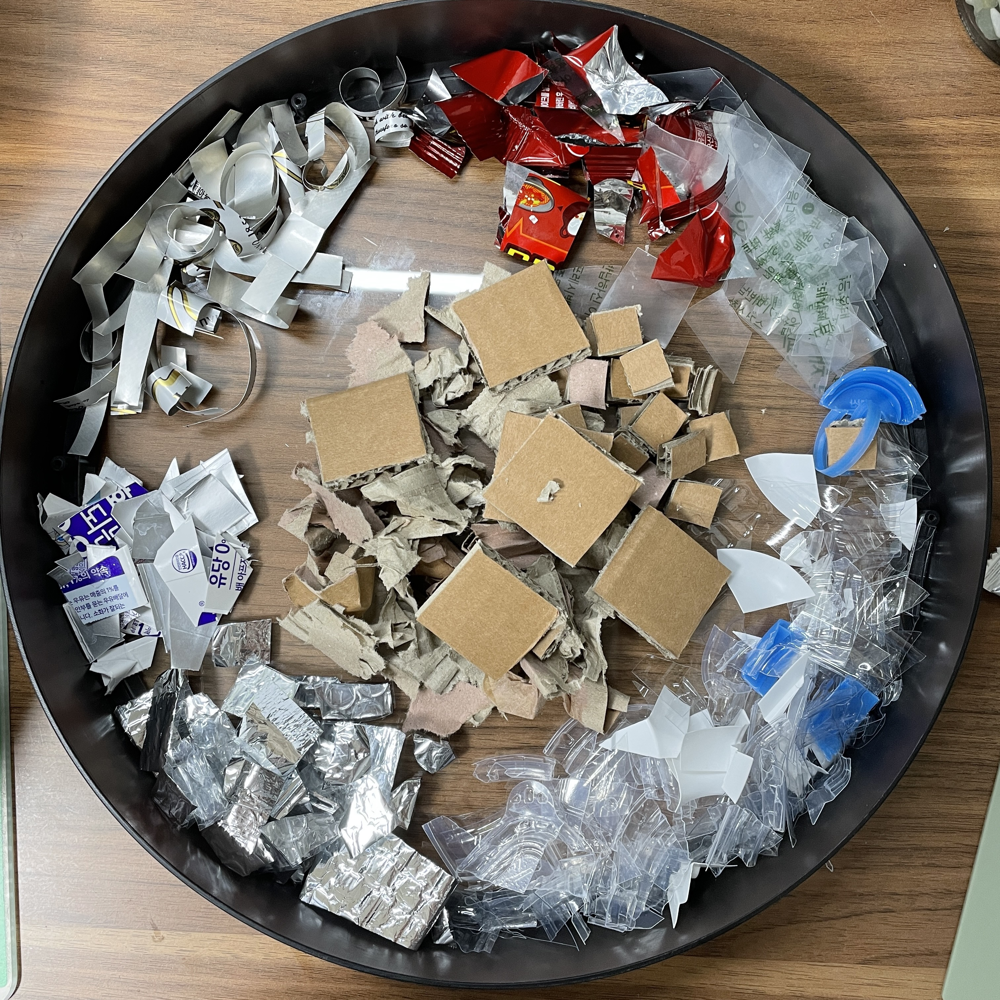
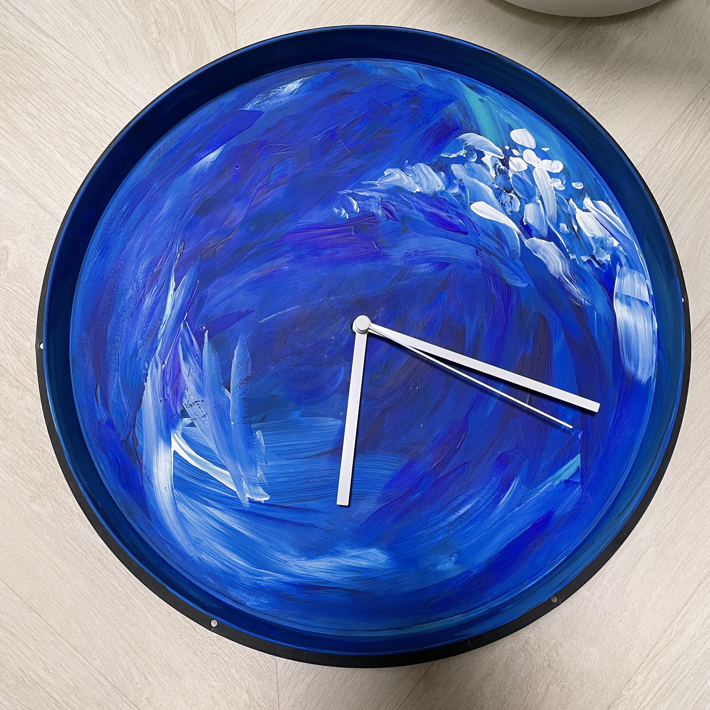
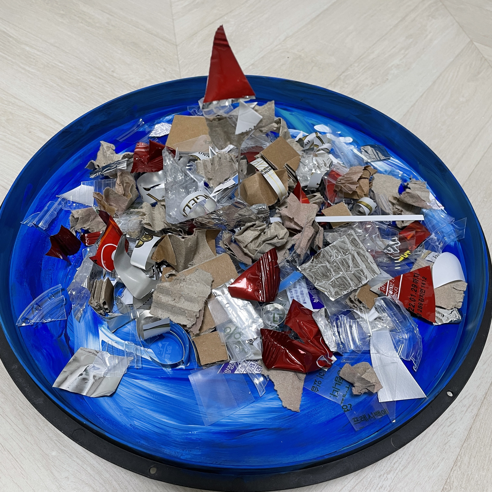

Pacific Clock
I was inspired by Pacific Trash Island.
I expressed it with a clock that the circulation of trash never ends in the Pacific.
I uploaded a video of this piece moving like a clock on Youtube.
Plan
Clock Detail Shot
 front^
 up^
elements



process

clock making^
Another Areas